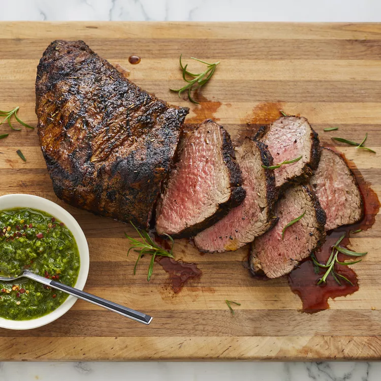

<-- Back To Home
Perfectly Grilled Beef Steak
A Santa Maria tri-tip with a delicious spice rub is cooked on the grill until black-on-the-outside and perfectly pink inside for a spectacular steak. The tri-tip is cut from the bottom sirloin and when cooked properly, produces a very flavorful, incredibly juicy piece of beef. The town of Santa Maria, California, is home to this delicious barbecued beef specialty.

Ingredients:
- 2 teaspoons salt
- 2 teaspoons freshly ground black pepper
- 2 teaspoons garlic powder
- 1 ½ teaspoons paprika
- 1 teaspoon onion powder
- 1 teaspoon dried rosemary
- ¼ teaspoon cayenne pepper
- 1 (2 1/2 pound) beef roast
- ⅓ cup red wine vinegar
- ⅓ cup vegetable oil
- 4 cloves crushed garlic
- ½ teaspoon Dijon mustard
Steps:
- Stir salt, black pepper, garlic powder, paprika, onion powder, rosemary, and cayenne pepper together in a bowl.
- Place beef in a glass baking dish and coat on all sides with spice mixture. Cover the dish with plastic wrap and refrigerate for 4 hours.
- Combine vinegar, vegetable oil, crushed garlic, and Dijon mustard in a sealable container. Cover the container and shake until ingredients are blended.
- Remove tri-tip from the refrigerator. Let sit uncovered at room temperature for 30 minutes.
- Preheat an outdoor grill for high heat; lightly oil the grates.
- Place tri-tip on the preheated grill and brush with vinegar mixture. Cook for 4 minutes, flip, and baste. Flip and baste every 4 minutes until tri-tip starts to firm up and is reddish-pink and juicy in the center, 25 to 30 minutes total. An instant-read thermometer inserted into the center should read 130 degrees F (54 degrees C). Let rest for at least 10 minutes before slicing.
- Enjoy!